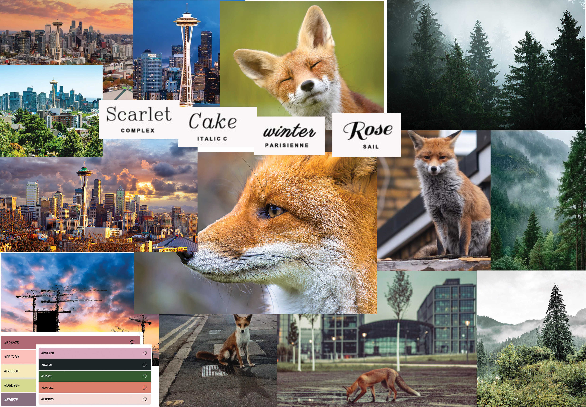
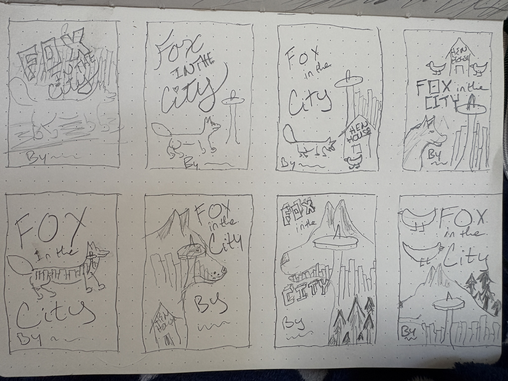
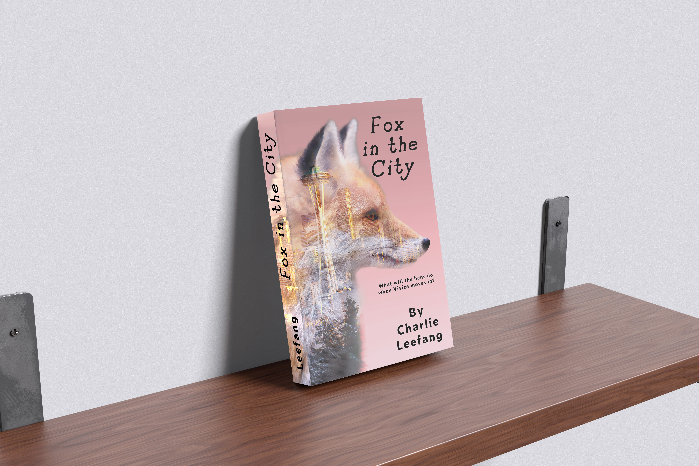

TOOLS
Adobe Photoshop
MY ROLE
Independent Editorial Designer
Book Cover Designer
DELIVERABLES
Concept Development
Title Development
Cover Design
Spine & Back Cover Design
ASSETS & CREDITS
Envato Elements — licensed subscription assets and mockups
THE STORY
Fox in the City is a conceptual book cover for fictional author Charlie Leefang. The story follows Vivica, a clever fox who leaves her forest home to begin a new life in Seattle.
The design challenge was to capture both sides of Vivica's world—her natural origins and her new urban surroundings—in a cover that feels playful, confident, and sophisticated.
CREATIVE DIRECTION
The visual concept brings together fox photography, forest textures, and a Seattle cityscape. Layered imagery creates a transition between Vivica's woodland origins and her new city life, making the setting part of the storytelling.
A soft pink gradient adds warmth and a modern editorial feel, while the fox's natural coloring grounds the composition. The tagline, “What will the hens do when Vivica moves in?” hints at Vivica's personality and introduces a playful sense of conflict.

Visual direction — palette, imagery, and atmosphere.
DESIGN DEVELOPMENT
The concept began with an exploration of fox symbolism in adult fiction, inspired in part by the fox-like features of one of my own dogs. I developed Vivica as a clever, confident character rather than a literal animal-story protagonist.
After exploring initial compositions, I selected a fox profile that preserved the animal's distinctive facial features. In Photoshop, I combined layered photographs of the fox, forest, and Seattle through masking and blending, refining the composition to create a cohesive transition between the two environments.

Initial sketches — exploring composition and character.
FINAL DESIGN
The final cover brings Vivica's two worlds together through layered imagery, a warm natural palette, and modern typography. The front, spine, and back extend the concept into a cohesive publication design.

Final book cover — front, spine, and back.
Every story deserves a cover that sparks curiosity.
CONTACT ME